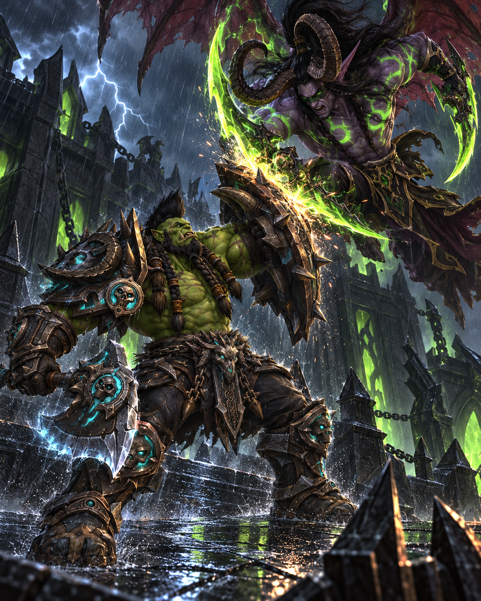
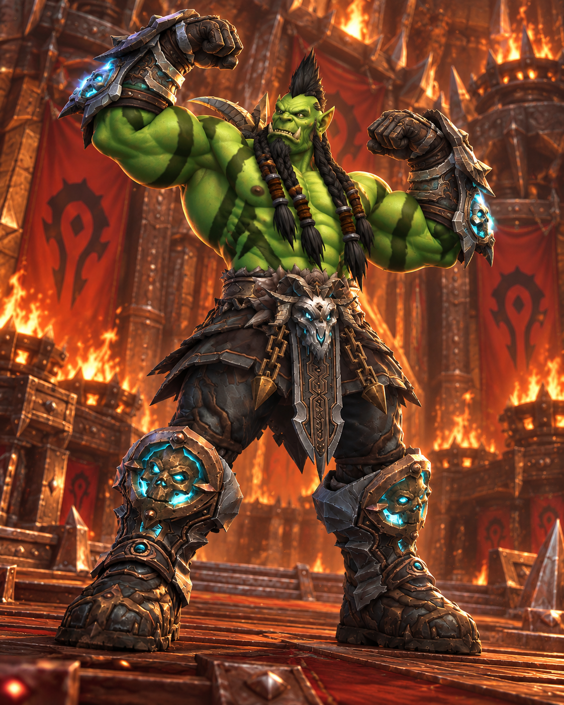
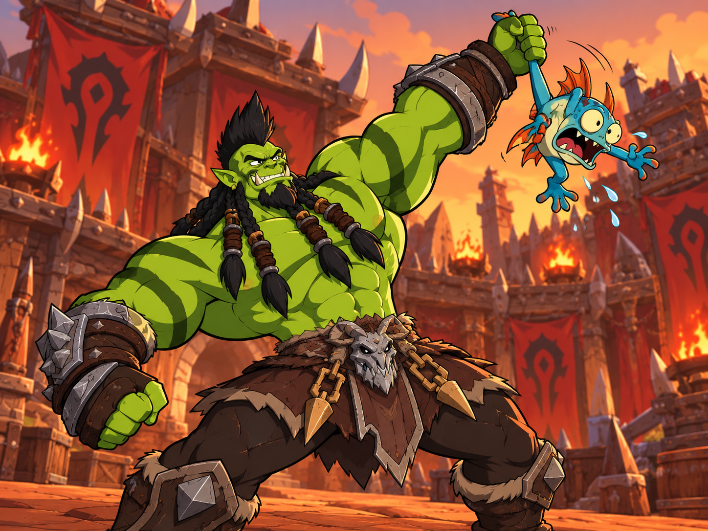
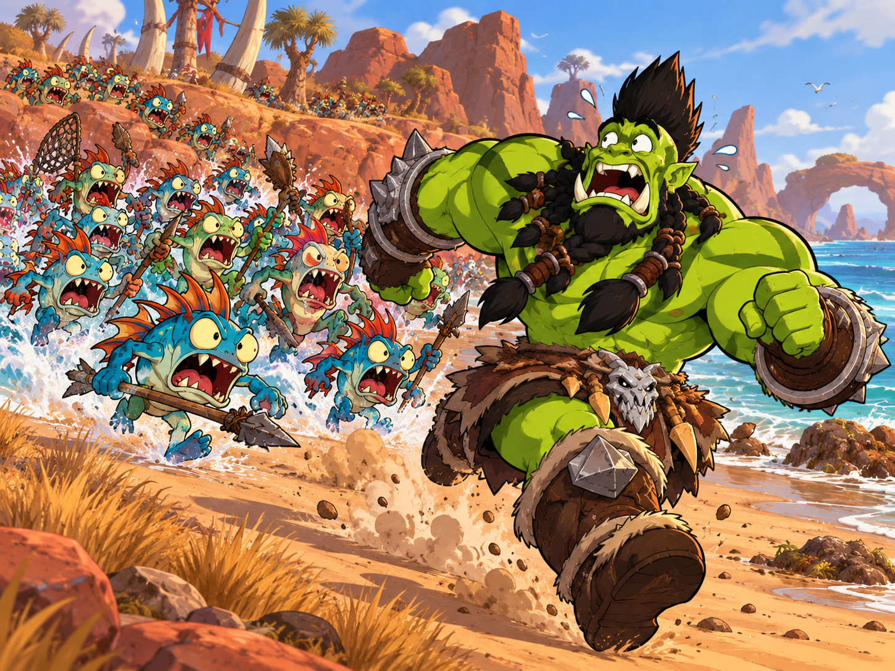
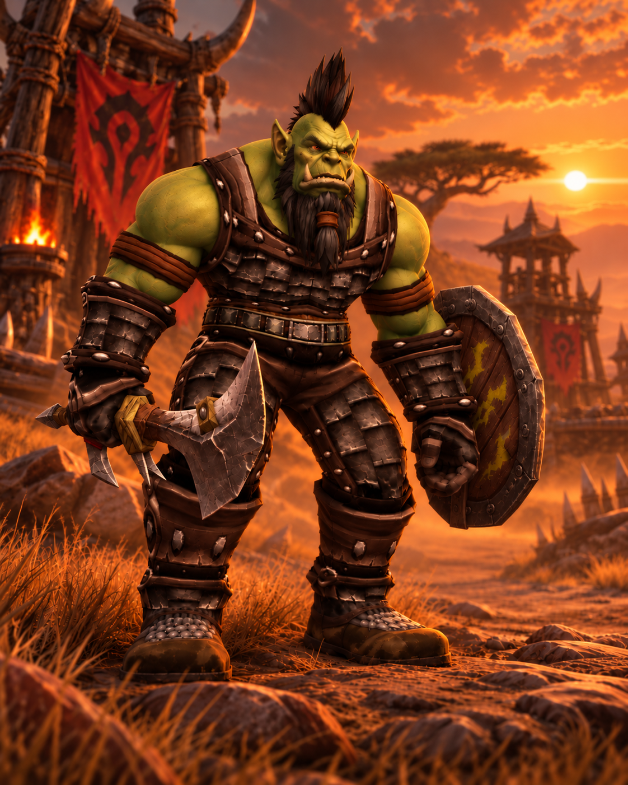

A growing collection of Sarthuk in battle, Sarthuk being impossibly handsome, and memes documenting an alarming lack of self-awareness.





The gallery grows as Sarthuk continues making questionable decisions. Click any image to view it in full size.